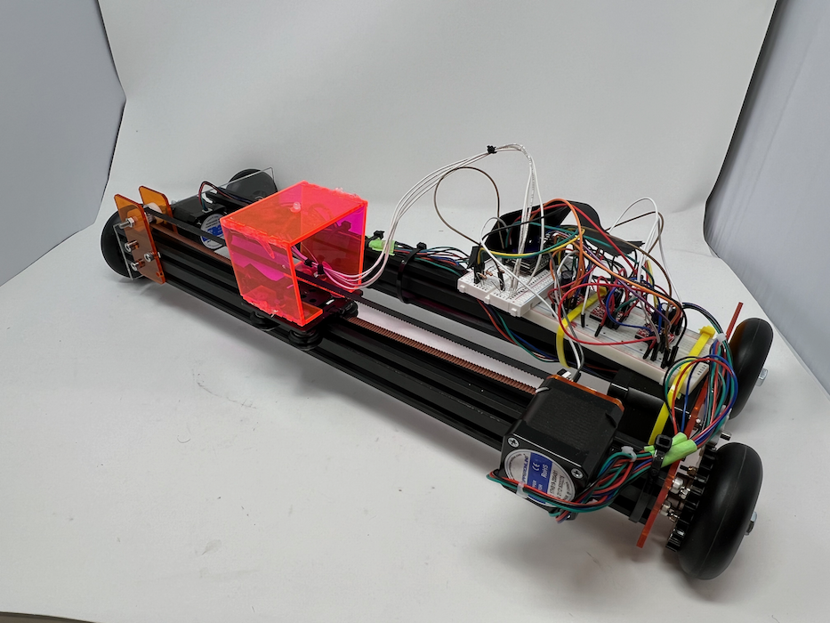
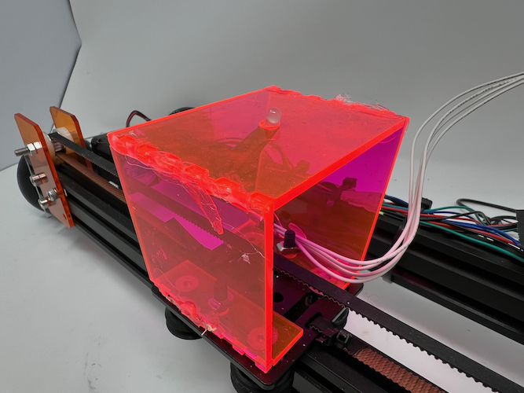
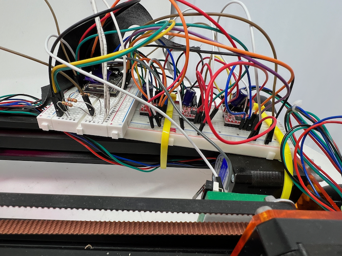
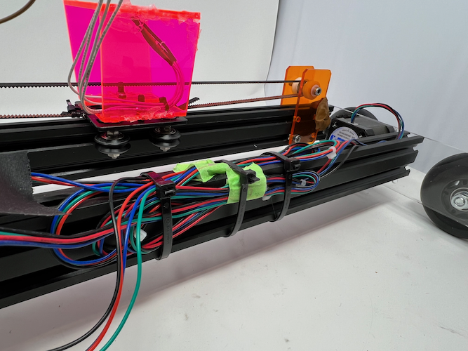

<div class="textcontainer">
<p class="margin"> </p>
<h3>Weeks 10-12: Machine Building</h3>
<h4>Assignment: Build a Drawing Robot</h4>
Over these few weeks, our class split up into two groups to build robots. The
Thursday lab group, which I was in, called ourselves the Ibrateam (after
<a href="http://fab.cba.mit.edu/classes/863.21/Harvard/people/ibrahimibrahim/index.html">Ibrahim</a>,
our wonderful lab TF). Our robot used an LED to draw; the images could be seen
by taking a long-exposure photograph while it was drawing. You can read up on
the documentation for our drawing robot
<a href="https://maeganjong.github.io/PS70/10_machine_building/index.html">here</a>.
<p class="margin"></p>
<div class="flexrow">

</div>
<p class="caption">The completed drawing robot.</p>
<p class="margin"></p>
<p class="margin"></p>
<div class="flexrow">

</div>
<div class="flexrow">


</div>
<p class="caption">Detail of the robot.</p>
<p class="caption">Top: Adelaide made us a cool housing for the LED out of fluorescent acrylic. Left: we had to use two breadboards to fit the Arduino as well as the three motor drivers. Right: we tried our best to keep the wiring relatively under control.</p>
</div>